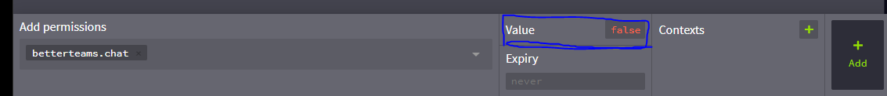

Introduction:
Create teams to fight to be the best. This plugin is designed to encourage teamwork and a sense of community within a server. BetterTeams includes features such as: Teaming up with friends Having private chats, unique to each team Protecting members of teams from team-killing. Individual homes for each team
This page includes a breif overview of the plugin, for more information including permisison nodes view the full wiki.
How it works
Each team has several different roles, to ensure the management of each team is as easy as possible. The available roles are as follows:
- Owner - This role has permissions over the entire team
- Admin - This role has permissions to control default users, but cannot cause any permanent damage.
- Default users - These users do not have administrative permissions, but still have full access to the features of the team. For a full list of features, each rank has available to them, view the commands section.
Set up:
Setting up this plugin is as simple as adding it to your plugins folder (view commands for permissions), and configuring the values in the config.yml file. Maintenance: Once the plugin is configured on your server, no additional maintenance is required.
Found a bug? Make a bug report for it (Use the bug template)
Is there something annoying you about how the plugin works, or something missing? Make suggestions for the future of the plugin (Use the feature template)
Commands:
View the wiki page for commands
Default commands: These are commands which every user requires to interact with better teams, by default all these commands are accessible to everyone. If you want to take away the permission, the permission node is: betterTeams.standard Commands all users have access to:
- /team join
- Joins the specified team - /team create
- Creates a new team with that name - /team leave - Leaves the current team
- /team home - Teleports to the teams home location
- /team chat [message] - If a message is included, it will send a single message to the team chat, if no message is included the player will be moved to the team chat (all further messages will go there)
- /team info [team/player] - Provides information on the team or the team that the specified player is in. */team help - Provides a personalised help page, which will only show the commands that the user has access to Commands that admins and owners of teams have access to:
- /team invite
- Invites the specified player to the team - /team kick
- Kicks the specified player from the team (players can only kick members a lower rank than their own) - /team ban
- Bans a player from the team (players can only ban users a lower rank than their own) - /team unban
- Allows the specified player to join back into the team. - /team sethome - Sets the location of the team home (accessed by /team home)
Commands that only the owners of teams have access to:
- /team disband - Forces all members of the team to leave (cannot be undone)
- /team name
- Changes the name of the team - /team description
- Changes the description of the team - /team open - Toggles if the team is invite-only or open to everyone
*/team promote
- Promotes a player to the next rank - /team demote
- Demotes a player from their current rank Admin commands: To get permission to use these commands, the permission node is: betterTeams.admin
Admin commands can have the prefix [teamadmin] or [teama] both work exactly the same
- /teama help - Displays a help page of all admin commands
- /teama reload - Reloads all configuration files
Configuration:
Configuration if this plugin is a simple task. To configure the enabled features of the plugin, view the plugin.yml file to see what can be changed (the comments in the file will make it very clear what does what).
To change the messages within the plugin (except the message prefix which is in config.yml) use the messages.yml file. Colour codes are accepted.
Plugins that works with Better Teams.
There are many plugin that work with Better Teams, you can find them by clicking here
and please note that, these are plugins that work with BetterTeams, we are not the support for them, if your having any issue with the plugin that work with BetterTeams, kindly ask their support
Feature request:
Feel free to request a feature or Lanuage for this plugin!
Permissions:
There is a specific Wiki for permisison, please vist that for more info.
View the wiki page for Permissions
Revoking a permission node with LuckPerms:
As shown in the screenshot below, When giving the group/player the permission node, set the value to false. This will result in the player not having access to that permission.
Support:
Donation:
If you own a big Network I encourage funding BetterTeams by donating to keep alive the plugin development and help small servers have a free plugin for Teams